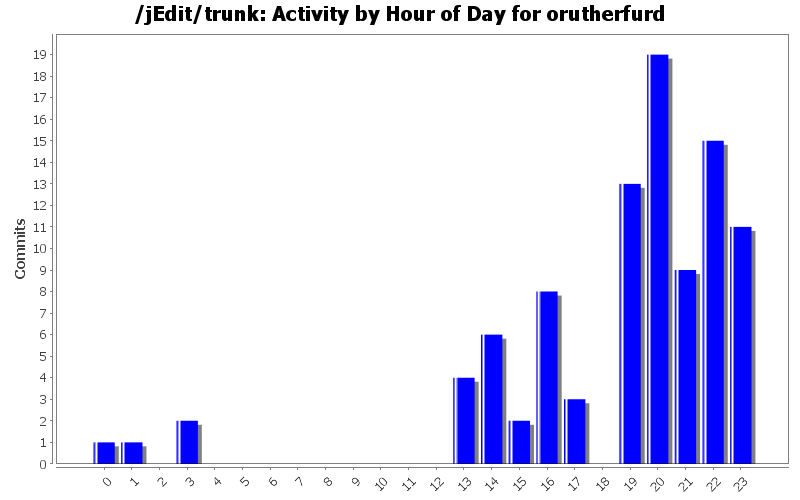
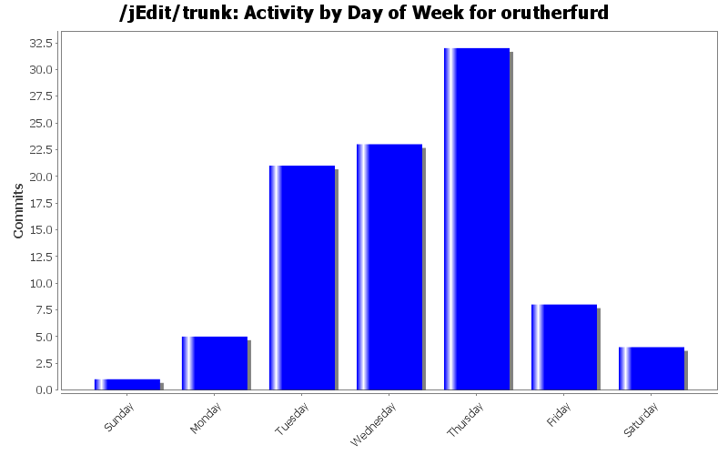
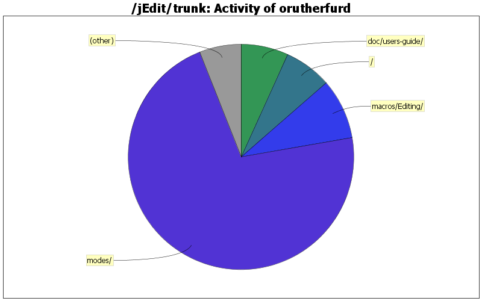

| Directory | Changes | Lines of Code | Lines per Change |
|---|---|---|---|
| Totals | 94 (100.0%) | 3290 (100.0%) | 35.0 |
| modes/ | 50 (53.2%) | 2360 (71.7%) | 47.2 |
| macros/Editing/ | 18 (19.1%) | 285 (8.7%) | 15.8 |
| / | 5 (5.3%) | 225 (6.8%) | 45.0 |
| doc/users-guide/ | 3 (3.2%) | 223 (6.8%) | 74.3 |
| macros/Clipboard/ | 5 (5.3%) | 101 (3.1%) | 20.2 |
| macros/Misc/ | 5 (5.3%) | 44 (1.3%) | 8.8 |
| doc/ | 4 (4.3%) | 19 (0.6%) | 4.7 |
| org/gjt/sp/jedit/ | 1 (1.1%) | 16 (0.5%) | 16.0 |
| org/gjt/sp/util/ | 1 (1.1%) | 15 (0.5%) | 15.0 |
| macros/Text/ | 1 (1.1%) | 1 (0.0%) | 1.0 |
| macros/Properties/ | 1 (1.1%) | 1 (0.0%) | 1.0 |

* reverted bugfix #1522589 ("\" is not a valid escape character for t-sql)
* added mysql mode (where I believe "\" is a valid escape character)
* added django templates mode
* fix for Python string interpolation regex
386 lines of code changed in 6 files:
* coding convention fixes to org/gjt/sp/util/Log.java
* fussy formatting fixes for doc/CHANGES.txt
23 lines of code changed in 2 files:
* fixes for gnu.regexp, com.microstar.xml removal
7 lines of code changed in 2 files:
* minor refinements for moin, rest, twiki, and velocity
17 lines of code changed in 4 files:
* added 2.5 keywords and highlighting for epydoc and doctest in docstrings
33 lines of code changed in 1 file:
* added myghty syntax highlighting
1 lines of code changed in 1 file:
* added mode for Myghty templates (http://www.myghty.org/)
133 lines of code changed in 2 files:
* added php keywords requested by Chris Petersen
6 lines of code changed in 1 file:
* added htaccess mode
(separate from apacheconf since scope of keywords and directives differ)
564 lines of code changed in 3 files:
* Bertalan Fodor's patch for setting caret position in addition to
line position when opening a file on the command line
* Bj??rn -> Bj?rn
23 lines of code changed in 2 files:
updates for Buffer -> JEditBuffer
7 lines of code changed in 6 files:
Macro fixes from Bj?rn "Vampire" Kautler
* HyperSearch_Results_to_Buffer.bsh behaves w/no results
* Display_Abbreviations.bsh formatting improvments
* Hex_Convert.bsh unused function fixed
15 lines of code changed in 3 files:
fix for java 1.5
1 lines of code changed in 1 file:
added twiki mode
181 lines of code changed in 2 files:
* fixed indentation of python code
1 lines of code changed in 1 file:
* highlight string interpolation specifiers
15 lines of code changed in 1 file:
* support for LaTeX-style literal-haskell
15 lines of code changed in 1 file:
* added __docformat__ to python
* made double-quoted strings LITERAL1 for ruby
* added structure to zpt tal attributes
13 lines of code changed in 3 files:
* python.xml: updated for changes in 2.4
* moin.xml: fixed term definition
* apacheconf.xml: added directives and literals in vhosts, removed duplicate keywords
46 lines of code changed in 3 files:
* updated docs for macros moved from Editing -> Clipboard
* added docs for Copy_Lines_Containing.bsh and Cut_Lines_Containing.bsh
46 lines of code changed in 1 file:
(22 more)